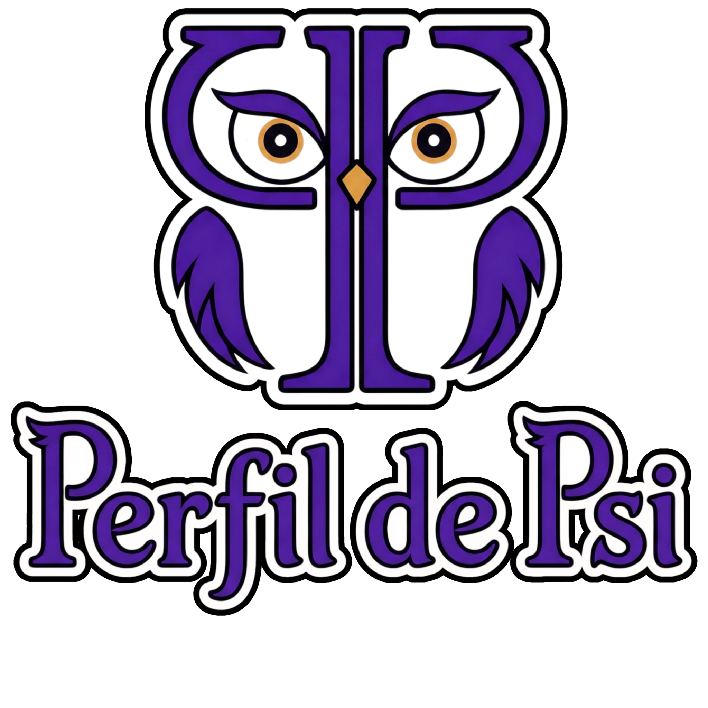

Estratégias digitais para psicólogas
Sua essência na presença digital.
Estratégia para atrair clientes particulares que se identifiquem com seu trabalho.
Sua jornada seguindo a sua essência.
Qual é o seu Perfil de Psi?
Você pode se reconhecer em mais de um. Construímos a estratégia com foco em atrair clientes particulares que reconhecem seu valor, respeitando seu jeito de ser Psi.
Psi ClínicaQuero ser encontrada sem uma rotina nas redes.
Seu foco pode continuar nos atendimentos. Construímos uma presença que apresenta seu trabalho com clareza e facilita o encontro com quem procura uma psicóloga.
Site profissional
Sua trajetória, seus atendimentos e um caminho simples para o contato.
Presença no Google
Site preparado para buscas e Perfil da Empresa, quando elegível.
Google Ads
Campanhas de pesquisa, conforme seu objetivo e investimento.
Você participa da construção e aprova as informações sobre seu trabalho.
O Perfil da Empresa exige atendimento presencial elegível. Para atendimento exclusivamente online, priorizamos o site e as buscas. A verba de anúncios é definida à parte.
Psi AutoraQuero dar espaço às minhas ideias pela escrita.
Construindo sua autoridade naturalmente como você é. Organizamos pautas e desenvolvemos os textos em parceria, dando às suas ideias um espaço próprio e preservando seu olhar.
Site com blog
Um lugar para publicar seus textos e apresentar seu trabalho.
Parceria editorial
Suas ideias, áudios e referências ganham forma junto à redatora.
SEO para artigos
Conteúdos organizados para facilitar sua descoberta nas buscas.
Seu olhar orienta os textos, e cada publicação passa pela sua revisão.
Blog é uma construção contínua. Newsletter, Instagram, LinkedIn ou Substack podem complementar a estratégia, conforme seu público e sua disponibilidade.
Psi ComunicadoraGosto de compartilhar ideias em vídeo.
Se comunicar por vídeos faz sentido para você, construímos temas, roteiros e formatos que respeitam seu jeito de falar. Uma presença com direção e possível de manter na sua rotina.
Direção de conteúdo
Temas e formatos que conversam com sua atuação e seu público.
Roteiros e edição
Apoio para gravar e dar forma aos seus vídeos para as redes.
Página profissional
Um espaço para apresentar os atendimentos e facilitar o contato.
Você traz sua voz e grava; nós apoiamos a organização e a produção.
Os formatos, a frequência e o apoio à produção são definidos em conjunto. Anúncios podem complementar o trabalho quando fizerem sentido.
Psi EducadoraQuero compartilhar saberes em cursos ou mentorias.
Seu conhecimento pode ganhar forma em encontros, cursos ou mentorias. A estratégia parte do público que você quer alcançar e do momento do projeto, preservando sua autoria.
Tenho uma ideia
Definir o tema e o formato, ouvir o público e planejar uma primeira edição.
Já tenho um projeto
Revisar a proposta, a divulgação e o caminho até a inscrição.
Estratégia do projeto
Público, proposta e próximos passos definidos com você.
Página de apresentação
Informações claras sobre o projeto e as inscrições.
Divulgação
Conteúdo, comunicação com interessados e campanhas, conforme o projeto.
Você desenvolve e valida o conteúdo técnico. A estratégia é construída em parceria.
Projetos para outras profissionais e para o público geral pedem abordagens diferentes. Essa escolha orienta o trabalho desde o início.
Primeiros passos · novas sementesMenos de 2 anos de formação? Temos condições especiais para você.
Menos de 2 anos de formação? Temos condições especiais para você.
Valores reduzidos nos serviços da agência para acolher seu início.
Acolher quem está começando é uma das missões da Perfil de Psi. Por isso, oferecemos valores reduzidos nos serviços da agência para psicólogas com menos de dois anos de formação.
Queremos ajudar novas sementes a criar raízes, desenvolver sua presença e encontrar caminhos para os primeiros clientes particulares. Construímos essa base em parceria, para que sua trajetória possa florescer, dar frutos e seguir com autonomia.
Direção inicial
Clareza sobre sua atuação, seu público e suas prioridades.
Presença essencial
Uma página profissional com as informações sobre seu trabalho.
Um primeiro canal
Buscas, escrita ou redes, de acordo com o seu momento.
Em 2022 uma pesquisa feita pelo CensoPsi revelou que 23,1% dos participantes com até dois anos de formação estavam sem trabalhar. Fonte: CensoPsi 2022, vol. 1, p. 177. O dado retrata a situação de trabalho na pesquisa; não mede desistência da profissão.
Vamos construir uma estratégia de atração com a sua identidade?
Uma conversa pode ajudar a organizar suas ideias. Solicite uma consultoria gratuita.